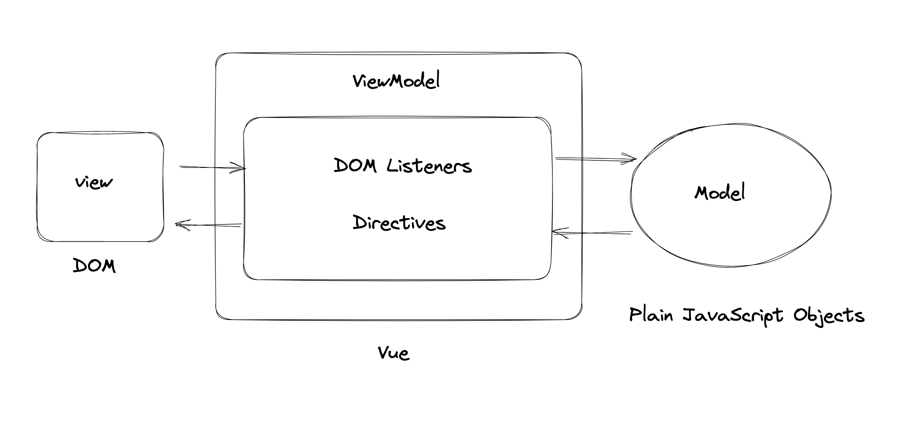
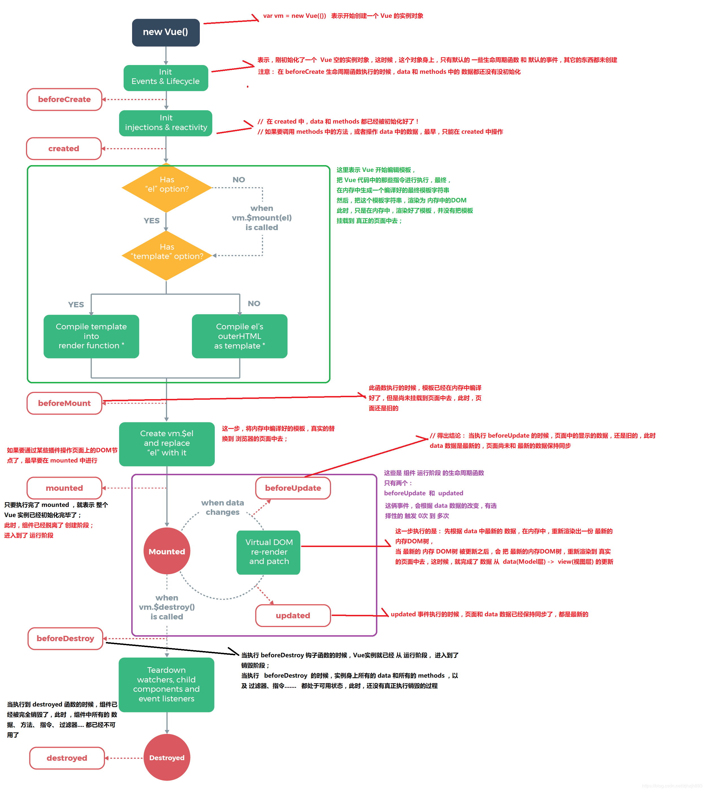

如何理解 MVVM
 数据驱动视图。Model–view–viewmodel
修改 Model 的数据（plain objects），Vue 的 ViewModel 会帮我们处理数据、监听数据变化等，异步渲染、更新 DOM。避免了我们手动去操作 DOM。
如何理解 ViewModel ？
在 Vue 中， ViewModel 代表 Vue 提供的底层能力，比如事件的处理、响应式系统等，它是作为 View 层和 Model 层的桥梁，View 和 Model 之间的同步工作，都是自动的。
MVVM与MVC有什么区别？
MVC是Model-View-Contoller的简写，即模型-视图-控制器。
MVC是单向通信，也就是View和Model必须通过Controller来承上启下。
比如用户在页面上（View层）操作了一个按钮，事件被控制器接收处理，修改 Model 层的数据，然后将最新的数据同步到 View 层。当然，用户也可以直接操作控制器，通过控制器修改 Model 层的数据，将更新后的数据同步到 View 中。
MVVM实现了View和Model的自动同步，当Model的属性改变时，不再需要自己手动操作DOM元素，提高了页面渲染性能。
在MVVM架构下，View 和 Model 之间并没有直接的联系，而是通过ViewModel进行交互，Model 和 ViewModel 之间的交互是双向的。
View 可以通过 ViewModel 中事件绑定 的方式影响 Model，Model 可以通过 ViewModel 中 数据绑定 的方式去影响 View。
生命周期
Vue 三要素
响应式
Vue 如何监听到 data 的每个属性变化
1 | |
模板引擎
本质：字符串。
包含事件、指令、js 数据。
模板如何解析、指令如何处理。
1 | |
render 渲染函数
将字符串模板转化为 js 语法（虚拟DOM），那么是渲染成 html？渲染过程是如何？
Vue 响应式系统
Object.defineProperty（缺点）
- 深度监听，需要递归给所有对象的属性进行监听，如果我们的数据对象嵌套太深，计算量大。
- 直接给数据对象新增属性、或者通过 delete 删除对象属性，Vue 监听不到。所以有了
Vue.$set和Vue.$delete - defineProperty 本身不具备监听数组，需要对数组的方法特殊处理
Proxy（IE11不支持，兼容性不好，无法 polyfill）
Vue2 如何深度监听数据
1 | |
Vue2 如何监听数组
重写数组方法
1 | |
扩展原有方法
1 | |
Vue3 的 Proxy 来代理对象
1 | |
虚拟 DOM 和 Diff 算法
为什么需要 vDom，又为什么说操作 DOM 耗性能？
主要是在两个方面：
DOM 的实现和 JS 的实现属于两个独立的模块，跨模块交互性能消耗挺高。
耗浏览器性能，当我们操作 DOM，通常会引起浏览器的重绘和回流。
Virtual DOM
用 JavaScript 对象结构表示 DOM 树的结构；然后用这个树构建一个真正的 DOM 树
Diff 算法
树的 diff 算法时间复杂度为 O（n^3），是如优化到 O(n)的？
只比较同一层级，不跨层比较
tag 不相同，直接删掉重建，不再深度比较
tag 和 key 相同，则认为是相同节点，不再深入比较
参考视频
- 百度网盘-我的资源-前端框架及项目面试（Vue&React原理、Webpack&Babel、项目设计&项目流程） ↩